NewNuevoIn the terminal and the desktop appEn la terminal y en la app de escritorio
A new mod for Claude Code. Go fast. Stay in control.Un nuevo mod para Claude Code.Ve rápido, sin perder el control.
For people who build alone or with a small team. A mod plugs into Claude Code and changes how it works, without switching tools. SoftwareFactory adds a live panel, a task queue and a way of working: every request gets its own task, agent and branch, and nothing goes public without a privacy check.Para quien construye solo o con poca gente. Un mod se instala en Claude Code y cambia cómo trabaja, sin cambiar de herramienta. SoftwareFactory le añade un panel en vivo, una cola de tareas y una forma de trabajar: cada petición tiene su tarea, su agente y su rama, y nada se publica sin revisar los datos privados.
MITfree and open sourcelibre y abierto
Windows, macOS, Linux
750+automated testspruebas automáticas
Do you need SoftwareFactory?¿Necesitas SoftwareFactory?
1/6
Do things you asked Claude for get lost in the scroll?¿Se te pierden en el scroll cosas que le pediste a Claude?
Do you wait for Claude to finish one thing before asking for the next?¿Esperas a que Claude acabe una cosa para pedirle la siguiente?
Do changes from different tasks end up mixed on the same branch?¿Se te mezclan en la misma rama los cambios de tareas distintas?
Have you ever worried that a key, an e-mail or a personal path went public?¿Te ha preocupado alguna vez que se publicara una clave, un correo o una ruta personal?
Do your specs and documents end up unread?¿Tus especificaciones y documentos acaban sin leerse?
Do you forget why you decided something a few weeks ago?¿Olvidas por qué decidiste algo hace unas semanas?
Not yet, probably.Todavía no, seguramente.
It will help.Te va a ayudar.
You need it.La necesitas.
Claude Code on its own is serving you well. Come back when the projects pile up.Claude Code a pelo te está sirviendo. Vuelve cuando se te acumulen los proyectos.
A few things already slip. The queue and the panel keep them for you.Ya se te escapan algunas cosas. La cola y el panel las llevan por ti.
You are keeping too much in your head. SoftwareFactory is made for exactly this.Llevas demasiado en la cabeza. SoftwareFactory está hecha justo para esto.
Every request goes into the queue the moment you say it.Cada petición entra en la cola en cuanto la dices.
A subagent per task, all working at once, while you keep talking.Un subagente por tarea, todos a la vez, mientras sigues hablando.
Each task on its own branch, into develop as one clean commit.Cada tarea en su rama, a develop en un único commit limpio.
Every release is checked for private data, and a finding stops it.Cada publicación se revisa en busca de datos privados, y un hallazgo la para.
Vision, specs and reports as HTML pages people actually read.Visión, especificaciones e informes en páginas HTML que de verdad se leen.
Every decision on file, with its reason.Cada decisión por escrito, con su porqué.
AI writes code fast. Keeping track is the hard part.La IA escribe código rápido. Lo difícil es no perder el hilo.
Ideas get lostLas ideas se pierden
You ask for five things; the agent does two and forgets the rest.Pides cinco cosas; el agente hace dos y olvida el resto.
Every request goes to a queue, at once.Toda petición va a una cola, en el momento.
Changes get tangledLos cambios se enredan
Half-done work from different ideas piles up in the same place.Trabajo a medias de ideas distintas se amontona en el mismo sitio.
One task, one branch, one subagent.Una tarea, una rama, un subagente.
Private data leaksSe escapan datos privados
A token, an e-mail or a local path ends up in a public repository.Un token, un correo o una ruta local acaba en un repositorio público.
Every release is reviewed first.Cada publicación se revisa antes.
Don’t wait. Orchestrate.No esperes. Orquesta.
Every task gets its own subagent, working in the background on its own branch. While they work, you keep talking to Claude: ask for more, or test another task. You never wait for one to finish before starting the next.Cada tarea tiene su propio subagente, trabajando en segundo plano en su propia rama. Mientras trabajan, tú sigues hablando con Claude: pides más cosas o pruebas otra tarea. Nunca esperas a que termine una para empezar la siguiente.
Several subagents in parallel, one per task.Varios subagentes en paralelo, uno por tarea.
Each on its own branch: they never step on each other.Cada uno en su rama: no se pisan.
The panel shows every step as it happens.El panel enseña cada paso según ocurre.
youtú“…and invoices should export to PDF”«…y que las facturas se exporten a PDF»
47AFix accents in the CSV exportArreglar los acentos del CSVfeature/47-csv
3/5 · Check it opens in Excel3/5 · Comprobar que abre en Excel
48ADark mode in SettingsModo oscuro en Ajustesfeature/48-dark-mode
1/4 · Pick the colour tokens1/4 · Elegir los colores
52AExport invoices to PDFExportar las facturas a PDFfeature/52-pdf
1/6 · Lay out the invoice1/6 · Maquetar la factura
46Search by tagBuscar por etiquetafeature/46-tags
Ready to testLista para probar · your turn, whenever you likete toca, cuando quieras
3 subagents working · 0 waiting on you to finish3 subagentes trabajando · ninguno te hace esperar
Claude knows what you’re on. And doesn’t interrupt.Claude sabe en qué estás. Y no te interrumpe.
Every answer starts with the task you are focused on. News from other tasks waits for the end of an answer, in one short line. An idea that comes up halfway goes to the queue, not into the conversation.Cada respuesta empieza por la tarea en la que estás. Lo de otras tareas espera al final de una respuesta, en una línea breve. Una idea que surge a mitad va a la cola, no a la conversación.
The focus follows what you write about: nothing to set.El foco sigue a lo que escribes: no hay que fijarlo.
No updates from other tasks while you type.Ningún aviso de otras tareas mientras escribes.
Your task is waiting? Claude suggests one thing to do meanwhile.¿Tu tarea espera? Claude te propone una sola cosa que hacer entretanto.
youtú“Names with ñ still break in Excel. Oh, and invoices need a logo.”«Los nombres con ñ siguen saliendo mal en Excel. Ah, y las facturas necesitan logo.»
🅵🅾🅲🆄🆂Fix accents in the CSV exportArreglar los acentos del CSV (T❹ ❼ )
Fixed: the export is now UTF-8 with BOM, so Excel opens ñ and é. Ready to test on its branch.Arreglado: la exportación va ahora en UTF-8 con BOM y Excel abre la ñ y la é. Lista para probar en su rama.
(ᴏꜰꜰ-ᴛᴏᴘɪᴄ T❺ ❸ : invoice logo noted in the queue; shall I start it❓logo de las facturas anotado en la cola; ¿lo pongo en curso❓)
(ᴏꜰꜰ-ᴛᴏᴘɪᴄ T❹ ❽ : dark mode ready to test ▶️modo oscuro listo para probar ▶️)
1 task in focus · 2 working quietly1 tarea en foco · 2 trabajando sin molestar
Same Claude. A very different day.El mismo Claude. Un día muy distinto.
Claude Code is brilliant at writing code. Keeping track of everything around it is still your job, unless something keeps it for you.Claude Code escribe código de maravilla. Llevar la cuenta de todo lo demás sigue siendo cosa tuya, salvo que algo la lleve por ti.
Claude Code on its ownClaude Code a pelo
You ask for five things. Three get lost in the scroll.Pides cinco cosas. Tres se pierden en el scroll.
Every change piles up on the branch you happen to be on.Todos los cambios se amontonan en la rama en la que estés.
The to-do list lives in your head.La lista de pendientes vive en tu cabeza.
You push and hope nothing private slipped in.Subes y cruzas los dedos para que no se cuele nada privado.
Each project means setting things up again.Cada proyecto, a preparar todo otra vez.
With SoftwareFactoryCon SoftwareFactory
Every request lands in a queue the moment you say it.Cada petición entra en una cola en cuanto la dices.
Each task works on its own branch, with its own agent, all at once.Cada tarea trabaja en su rama, con su agente, todas a la vez.
One panel shows what is running, waiting and done.Un panel enseña lo que está en marcha, lo que espera y lo hecho.
Every release is checked for secrets and personal data.Cada publicación se revisa en busca de secretos y datos personales.
Any project is ready after a few questions.Cualquier proyecto queda listo tras unas pocas preguntas.
From an idea to a release, one task at a time.De una idea a una versión publicada, tarea a tarea.
You only step in twice: to test, and to say OK. The rest moves on its own.Solo intervienes dos veces: para probar y para dar el OK. Lo demás avanza solo.
PROCESO
From an idea to a release
You step in twice: to test, and to say OK.
Click a step to see its details; hover or tab to it to highlight its path. Escape closes it.
6 NODOS · 7 FLECHAS
Say it in the chat, in your own words; several requests in one message become several tasks.
Before any work starts, it is in the queue with its steps. Pending tasks start with «Start».
A subagent per task, on its own branch, while you keep talking to Claude.
The task waits for you, ready to test on its branch. Nothing reaches develop without your OK.
One click: the branch goes into develop as one commit, easy to revert.
RELEASE checks for private data, then moves develop to main with the version tag.
PROCESO
De una idea a una versión publicada
Intervienes dos veces: para probar y para dar el OK.
Pulsa un elemento para ver su ficha; pasa el ratón o llega con el tabulador para resaltar su recorrido. Escape la cierra.
6 NODOS · 7 FLECHAS
Dilo en el chat, con tus palabras; varias peticiones en un mensaje son varias tareas.
Antes de empezar nada, ya está en la cola con sus pasos. Las pendientes arrancan con «Poner en curso».
Un subagente por tarea, en su rama, mientras sigues hablando con Claude.
La tarea te espera lista para probar en su rama. Nada llega a develop sin tu OK.
Un clic: la rama entra en develop en un solo commit, fácil de revertir.
RELEASE revisa los datos privados y pasa develop a main con el tag de la versión.
No idea gets lost.Ninguna idea se pierde.
Say it in the chat, in your own words. Before any work starts, it is in the queue as a task with its steps.
Dilo en el chat, con tus palabras. Antes de empezar nada, ya está en la cola como tarea con sus pasos.
Three requests in one message become three tasks.Tres peticiones en un mensaje son tres tareas.
Bugs Claude runs into go to the queue too.Los errores que encuentra Claude también van a la cola.
TURBO hands Claude every task that does not need you.TURBO pasa a Claude todas las tareas que no te necesitan.
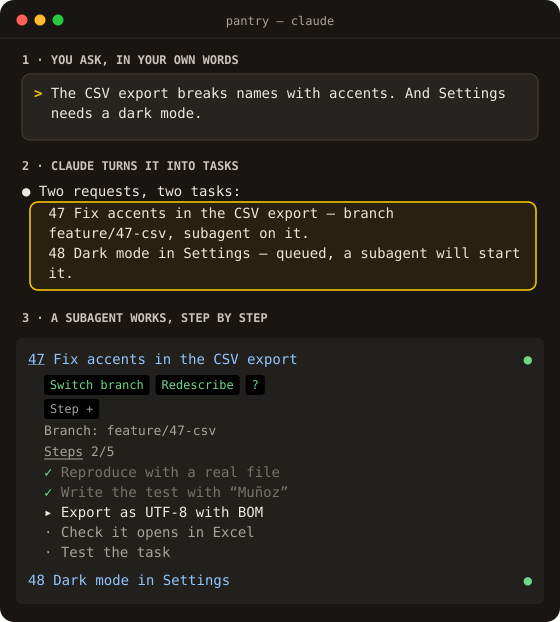
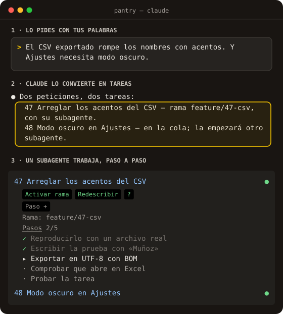
You decide. Claude does the work.Tú decides. Claude trabaja.
Each task gets its own agent and its own branch. Nothing touches your stable code until you have tested it and said OK.
Cada tarea tiene su propio agente y su propia rama. Nada toca tu código estable hasta que lo pruebas y das el OK.
Start a queued task with one click: Start, in the panel.Pon en marcha una pendiente con un clic: Poner en curso, en el panel.
Close, discard or revert a task with a click.Cierra, descarta o revierte una tarea con un clic.
One clean commit per task, easy to undo.Un commit limpio por tarea, fácil de deshacer.
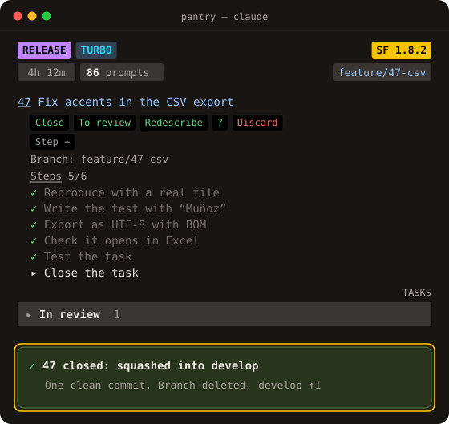
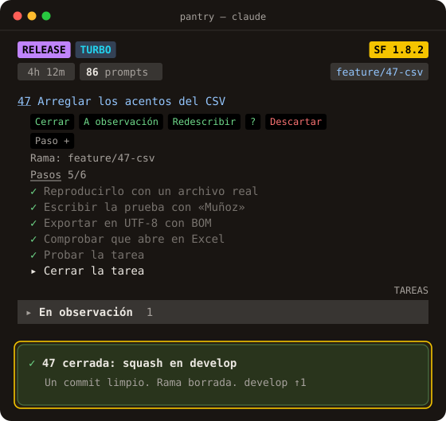
Your projects, as they are.Tus proyectos de siempre, sin rehacerlos.
Bring in a project you already have, or start from an empty folder. A few questions as menus and it is ready, without moving or renaming your code.
Trae un proyecto que ya tengas, o empieza en una carpeta vacía. Unas pocas preguntas con menús y queda listo, sin mover ni renombrar tu código.
Nothing changes without your OK.Nada cambia sin tu OK.
It reads your branches, commit style and version file.Lee tus ramas, tu forma de hacer commits y tu archivo de versión.
No GitHub repository yet? It creates one.¿Sin repositorio en GitHub? Lo crea.
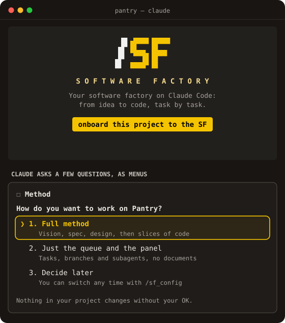
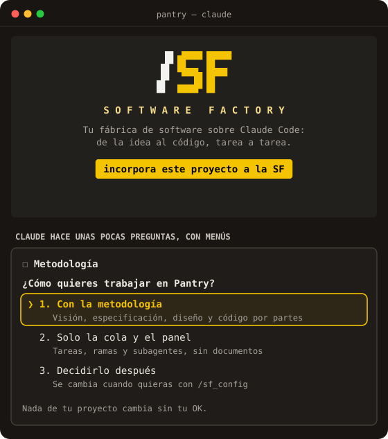
Commands before inference.Comandos antes que inferencia.
A working principle of SoftwareFactory. What a plain command can do, a command does: closing a task, publishing, checking for private data. Claude is kept for what needs judgment, so you spend fewer tokens and get the same result every time.Un principio de trabajo de SoftwareFactory. Lo que puede hacer una orden lo hace una orden: cerrar una tarea, publicar, revisar los datos privados. Claude queda para lo que pide criterio: gastas menos tokens y el resultado es siempre el mismo.
Everything at a glance, wherever you use Claude Code.Todo de un vistazo, uses Claude Code donde lo uses.
The same panel in the terminal and in the Claude Code desktop app: what is running, which step it is on, what is waiting and what is done. Not in full screen? A small box above the prompt keeps the essentials.El mismo panel en la terminal y en la app de escritorio de Claude Code: qué está en marcha, en qué paso va, qué espera y qué está hecho. ¿Sin pantalla completa? Una caja pequeña sobre el prompt guarda lo esencial.
Buttons run plain commands, without spending tokens.Los botones lanzan órdenes, sin gastar tokens.
The current step of every task, always in sight.El paso actual de cada tarea, siempre a la vista.
Commits waiting to be pushed, one click away.Los commits por subir, a un clic.
The same marks in the chat and in the panel:Las mismas marcas en el chat y en el panel:🟢 workingtrabajando🔴 finished, waitingterminado, espera▶️ ready to testlista para probar👀 in reviewen observación🔒 closedcerrada
pantry — claude
RELEASETURBOSF 1.8.2
4h 12m86 promptsdevelop ↑3
▾
▸ 3
▸ 124
▸ 12
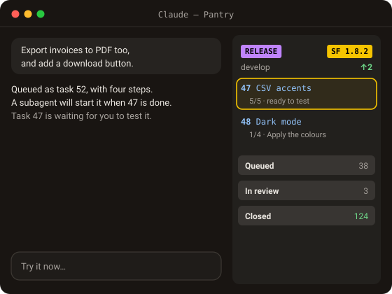
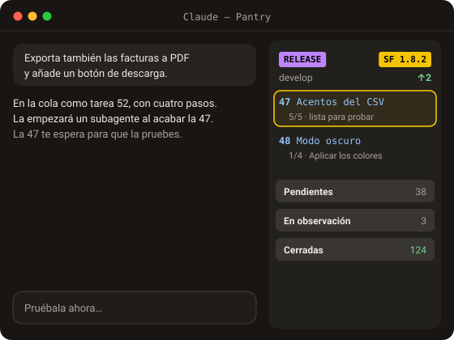
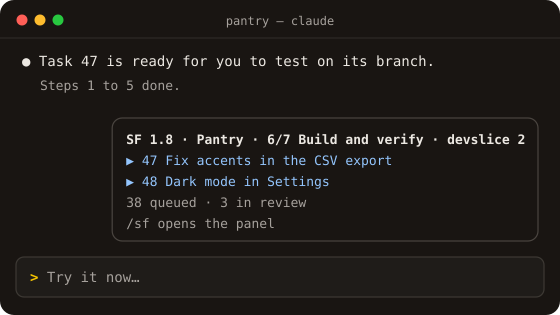
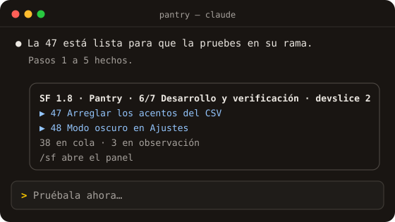
Your project, told as a story.Tu proyecto, contado como una historia.
The vision document doesn’t list features: it tells a story. A protagonist with a name, a real problem, scenes and chapters, and every feature of your project shown in action, at the moment it changes something for someone. It reads like a book, in an e-reader that turns the page.El documento de visión no enumera funciones: cuenta una historia. Un protagonista con nombre, un problema de verdad, escenas y capítulos, y cada función de tu proyecto vista en acción, en el momento en que le cambia algo a alguien. Se lee como un libro, en un lector que pasa página.
Try it: turn the pages of the vision of Pantry, a made-up app.Pruébalo: pasa las páginas de la visión de Pantry, una app inventada.
/SFPantry · VisionPantry · Visión
ProloguePrólogo
The list on the fridgeLa lista de la nevera
Lucía runs a small catering business from her kitchen, with Marco on deliveries. Every Friday she shops for the weekend, and every Friday something is missing.Lucía lleva un pequeño catering desde su cocina, con Marco en el reparto. Cada viernes compra para el fin de semana, y cada viernes falta algo.
Last month it was saffron, with forty guests booked. The list was right where she had left it: on the fridge, at home.El mes pasado fue el azafrán, con cuarenta invitados. La lista estaba donde la dejó: en la nevera, en casa.
This Saturday there are forty guests again.Este sábado vuelve a haber cuarenta invitados.
✦ ✦ ✦
Illustrative scene · Thursday, 21:00Escena ilustrativa · jueves, 21:00
Chapter 1Capítulo 1
What the shelf knowsLo que sabe la balda
Since Tuesday, Pantry has kept count. When a jar runs low, it goes on the list by itself.Desde el martes, Pantry lleva la cuenta. Cuando un bote se acaba, entra solo en la lista.
On Friday, at the market, Lucía opens the list on her phone. Saffron is at the top.El viernes, en el mercado, Lucía abre la lista en el móvil. El azafrán está arriba del todo.
For the first time in months, she doesn’t call home.Por primera vez en meses, no llama a casa.
Chapter 2Capítulo 2
Saturday, forty guestsSábado, cuarenta invitados
Nothing was missing. The paella went out on time, and the last jar of saffron went into it.No faltó nada. La paella salió a su hora, y el último bote de azafrán, dentro.
Marco only had one question: who taught the shelf to talk?Marco solo tuvo una pregunta: ¿quién le enseñó a hablar a la balda?
✦ ✦ ✦
End of the sampleFin de la muestra
1 / 4
Fictional story: characters and scenes are imagined.Historia de ficción: personajes y escenas son imaginados.
And the rest of the document, too:Y el resto del documento, también:
Chapters and scenesCapítulos y escenas
Scenographic diagramsEsquemas escenográficos
Your project’s themeTema de tu proyecto
Prints on A4Se imprime en A4
Reads on a phoneSe lee en el móvil
Not to produce more. To ask for less of your attention.No producir más. Pedirte menos atención.
The goal of SoftwareFactory. One person runs many projects at once, building, researching, teaching and learning, and the factory keeps count so your head stays free.El objetivo de SoftwareFactory. Una persona lleva muchos proyectos a la vez, desarrolla, investiga, enseña y aprende, y la fábrica lleva la cuenta para que la cabeza quede libre.
Publish without fear.Publica sin miedo.
Before anything goes up to a public repository, SoftwareFactory checks what is leaving: secrets and keys, e-mails, paths from your machine, your user and machine name, local files. If it finds something, it stops. When it is clean, the version and its tag go out on their own, with one button.Antes de subir nada a un repositorio público, SoftwareFactory revisa lo que sale: secretos y claves, correos, rutas de tu máquina, tu usuario y el nombre del equipo, archivos locales. Si encuentra algo, para. Cuando está limpio, la versión y su tag salen solas, con un botón.
Goes outSale
src/export.py+ encode('utf-8-sig')
docs/manual.md+ CSV export section+ apartado de exportar a CSV
CHANGELOG.md+ v1.3.0
tagtagv1.3.0 → main
checkrevisión
Stays homeNo sale
tokentokenghp_••••••••••••
e-mailcorreoana@••••.com
your machine's pathruta de tu máquina/home/you/notes/…/home/tu/notas/…
local filesarchivos locales.env · settings.local.json
Public repo + a new finding = release blocked. Nothing is pushed.Repositorio público + un hallazgo nuevo = publicación parada. No se sube nada.
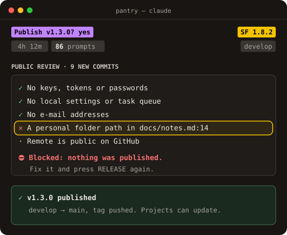
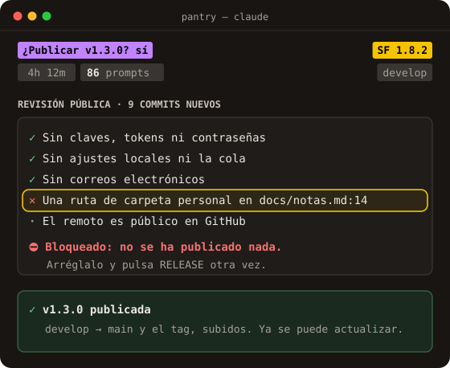
Checked before it leavesRevisado antes de salir
Every new commit: keys, tokens, e-mails, personal paths, local settings.Cada commit nuevo: claves, tokens, correos, rutas personales, ajustes locales.
Only what is new counts.Solo cuenta lo nuevo.
What was already public is not flagged again, and what you accept is not asked twice.Lo que ya era público no se vuelve a señalar, y lo que aceptas no se pregunta dos veces.
One click to releaseUn clic para publicar
develop to main, the version tag and the push. An update button appears when a new version is out.develop a main, el tag de la versión y la subida. Sale un botón para actualizar cuando hay versión nueva.
The queue is a file you ownLa cola es un archivo tuyo
# every task, in your repositorycada tarea, en tu repositorio$ cola.py ver 47
{ "id": 47, "estado": "en-curso",
"rama": "feature/47-csv" … }
Your projects, as they areTus proyectos de siempre, sin rehacerlos
Bring in a project you already have, or start from an empty folder. A few questions as menus and it is ready, without moving or renaming your code.Trae un proyecto que ya tengas, o empieza en una carpeta vacía. Unas pocas preguntas con menús y queda listo, sin mover ni renombrar tu código.
Reads your branchesLee tus ramas
Keeps your commit styleRespeta tus commits
Finds your version fileEncuentra tu versión
Creates the GitHub repo if missingCrea el repositorio en GitHub si falta
Carries on by itself after a reloadSigue sola tras recargar
Nothing is taken for grantedNada se da por hecho
Every close says what changed, what was checked and what is pending. A subagent that hits a block says so; it never works around it.Cada cierre dice qué cambió, qué se comprobó y qué queda. Un subagente que se topa con un bloqueo lo dice; nunca lo sortea.
0
changes to your project without your OK.cambios en tu proyecto sin tu OK.
What's inside the mod.Qué trae el mod.
One install. Everything works together, in every project.Una instalación. Todo funciona junto, en todos tus proyectos.
Task queueCola de tareas
Every request and every bug, with steps and history.Cada petición y cada error, con pasos e historial.
SubagentsSubagentes
One per task, in parallel, while you keep talking.Uno por tarea, en paralelo, mientras sigues hablando.
A branch per taskUna rama por tarea
Into develop with one commit when you say OK.A develop con un commit cuando das el OK.
Live panelPanel en vivo
Tasks, steps and buttons beside the chat.Tareas, pasos y botones junto al chat.
Terminal and desktop appTerminal y app de escritorio
The same mod, wherever you run Claude Code.El mismo mod, uses Claude Code donde lo uses.
OnboardingIncorporación
New or existing projects, through a few menus.Proyectos nuevos o existentes, con unos pocos menús.
Safe releasePublicación segura
Privacy check, version and tag, in one click.Revisión de datos privados, versión y tag, en un clic.
DocumentsDocumentos
Vision, specs and reports as HTML people read, with interactive diagrams.Visión, especificaciones e informes en HTML que se leen, con diagramas interactivos.
A method, if you want one.Método, si lo quieres.
The queue and the panel work on their own. Turn the method on and Claude guides the project from vision and spec to code, in small vertical slices.
La cola y el panel funcionan solos. Con la metodología, Claude guía el proyecto de la visión y la especificación al código, en devslices pequeñas.
Seven phases, always in sight.Siete fases, siempre a la vista.
Vision, spec and interface before picking technology.Visión, especificación e interfaz antes de elegir tecnología.
Every decision on file, with its reason.Cada decisión por escrito, con su porqué.
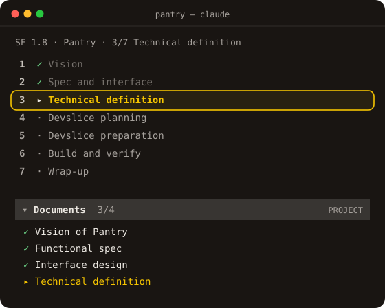
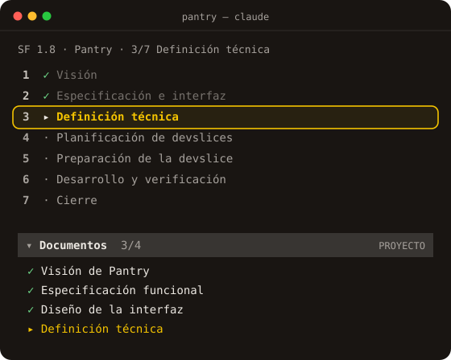
Questions, answered.Preguntas, respondidas.
What if I open two sessions on the same project?¿Y si abro dos sesiones en el mismo proyecto?
Only one runs SoftwareFactory: it has the panel and the queue. The other one says so and works as plain Claude Code; if the first one stops, it offers /sf_forzar_activa to take over.Solo una lleva SoftwareFactory: tiene el panel y la cola. La otra lo avisa y trabaja como Claude Code sin más; si la primera deja de latir, ofrece /sf_forzar_activa para tomar el relevo.
Do I need the method?¿Necesito la metodología?
No. The queue, the subagents, the panel and safe publishing work on their own. The method is a switch you turn on, or off, per project.No. La cola, los subagentes, el panel y la publicación segura funcionan solos. La metodología se activa, o se quita, en cada proyecto.
Will it touch my code?¿Toca mi código?
Onboarding does not move or rename anything, and asks before each change. Afterwards, Claude works on a branch per task, and nothing reaches your main line until you test it and close it.La incorporación no mueve ni renombra nada y pregunta antes de cada cambio. Después, Claude trabaja en una rama por tarea, y nada llega a tu línea principal hasta que lo pruebas y lo cierras.
Does it work with my existing projects?¿Funciona con mis proyectos de siempre?
Yes, new or old, in any language. It reads your branches, your commit style and your version file, and adapts to them.Sí, nuevos o antiguos, en cualquier lenguaje. Lee tus ramas, tu forma de hacer commits y tu archivo de versión, y se adapta.
Windows, macOS or Linux?¿Windows, macOS o Linux?
All three, in the terminal and in the Claude Code desktop app. You need git, the GitHub CLI signed in and Python 3.9 or later.Los tres, en la terminal y en la app de escritorio de Claude Code. Necesitas git, la CLI de GitHub con la sesión iniciada y Python 3.9 o posterior.
What does it do with GitHub?¿Qué hace con GitHub?
Every project lives in a GitHub repository; if yours has none, onboarding creates it with your OK. Pushes and releases go through the privacy check first, and on a public repository a finding stops them.Cada proyecto vive en un repositorio de GitHub; si el tuyo no tiene, la incorporación lo crea con tu OK. Las subidas y las publicaciones pasan antes por la revisión de datos privados, y en un repositorio público un hallazgo las para.
Is it free?¿Es gratis?
Yes. SoftwareFactory is free software under the MIT licence. You use it with your own Claude Code.Sí. SoftwareFactory es software libre con licencia MIT. Lo usas con tu propio Claude Code.
What language does it speak?¿En qué idioma está?
Today the panel and the generated documents are in Spanish. Claude talks to you in your language.El panel y los documentos están en castellano. Claude te habla en tu idioma.
Two commands. Then just talk to Claude.Dos órdenes. Después, habla con Claude.
Install once per computer and it works in every project, in the terminal and the desktop app.Se instala una vez por equipo y sirve en todos tus proyectos, en la terminal y en la app de escritorio.
terminalterminal
claude plugin marketplace add jumibot/SoftwareFactory
claude plugin install sf@softwarefactory --scope user
InstallInstala
Run the two commands, once per computer.Lanza las dos órdenes, una vez por equipo.
CheckComprueba
Ask Claude: “Check the SF installation”. It fixes what is missing, with your OK.Pide a Claude: «Comprueba la instalación de la SF». Arregla lo que falte, con tu OK.
StartEmpieza
Open your project, go full screen with /tui fullscreen or open the desktop app, and press the button on the welcome screen.Abre tu proyecto, pon la pantalla completa con /tui fullscreen o abre la app de escritorio, y pulsa el botón de la bienvenida.
You need Claude Code, git, the GitHub CLI signed in (gh auth login) and Python 3.9 or later. Installing sf brings its three dependencies on its own.Necesitas Claude Code, git, la CLI de GitHub con la sesión iniciada (gh auth login) y Python 3.9 o posterior. Instalar sf trae solas sus tres dependencias.